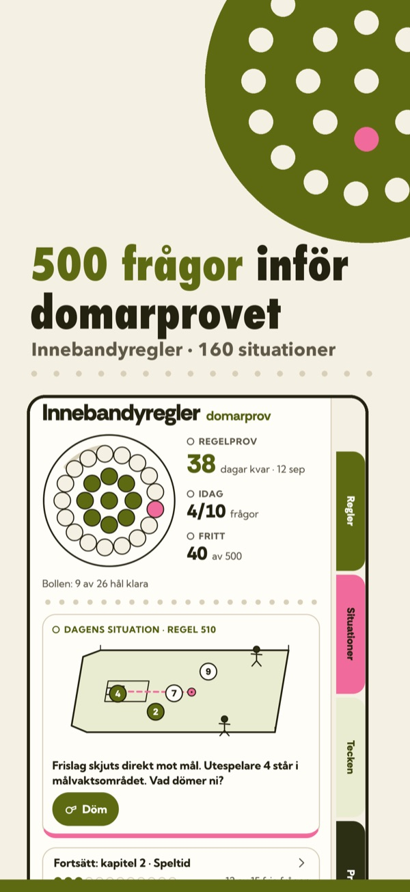
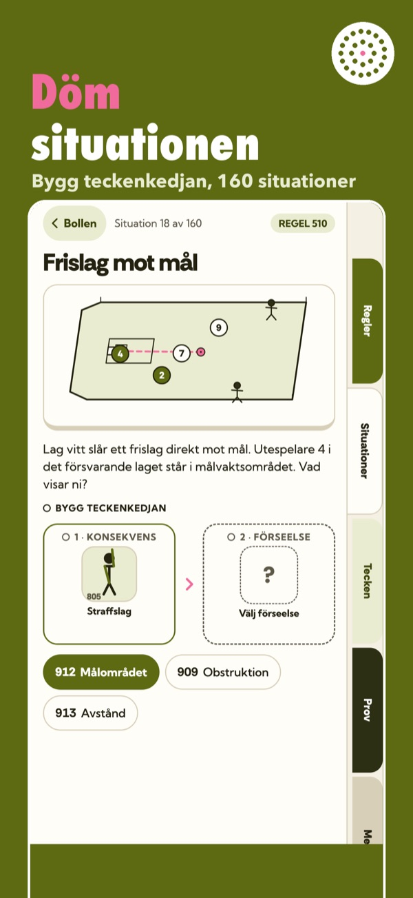
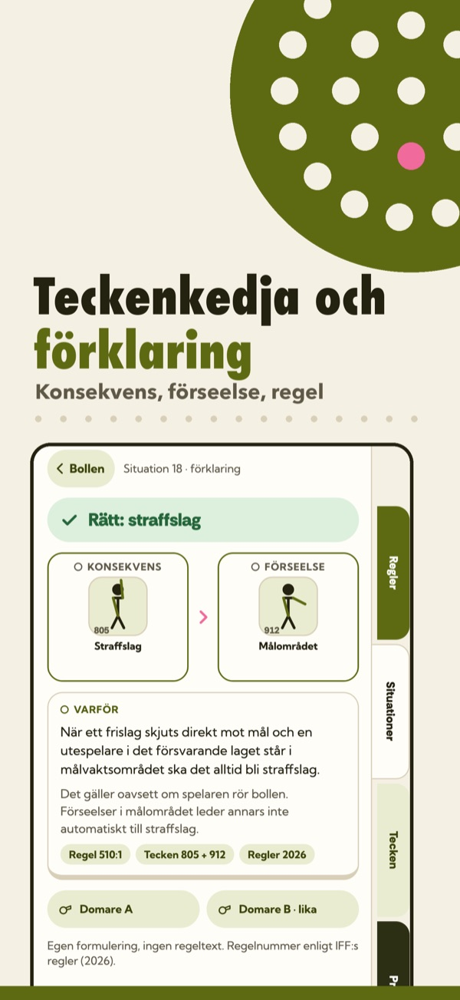
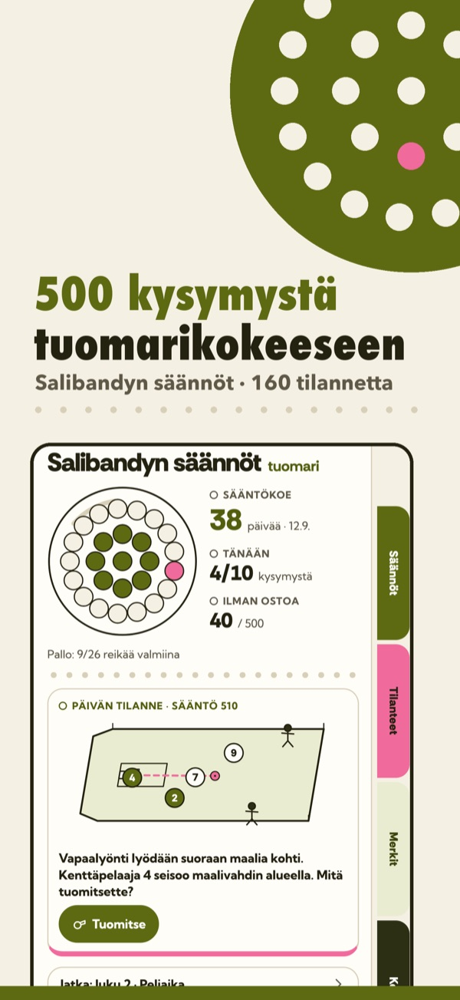
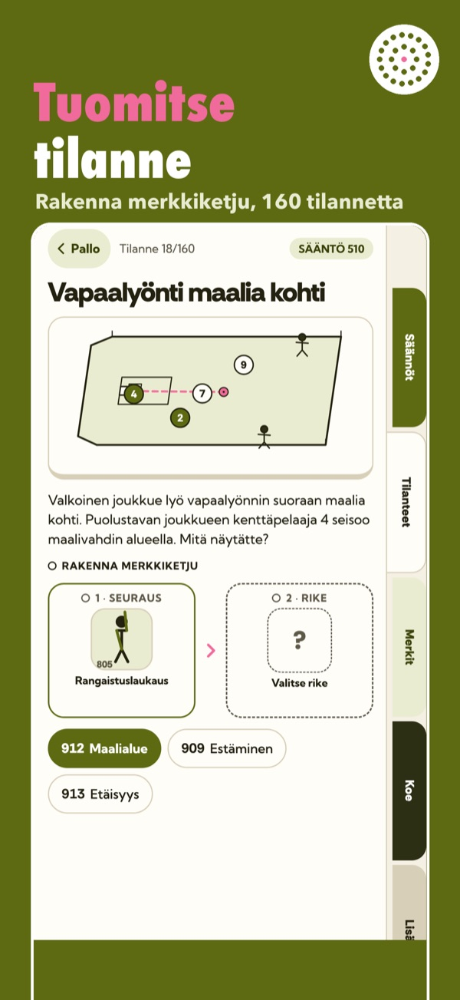

Regelprov för innebandydomare
Engångsköp – ingen prenumeration. Innebandyregler – domarprov förbereder dig för regelprovet: som ny domare på domarutbildningen, som licensierad domare inför säsongen eller i sekretariatet. Startsidan är en innebandyboll med 26 hål – varje fyllt hål är ett avklarat block frågor.



Snart i App Store
Tuomarikoe ja sääntövisa
Kertaosto – ei tilausta. Salibandyn säännöt – tuomari valmistaa sinut sääntökokeeseen: uutena tuomarina tuomarikoulutuksessa, kokeneena tuomarina ennen kautta tai toimitsijapöydässä. Aloitussivu on salibandypallo, jossa on 26 reikää – jokainen täytetty reikä on valmis kysymyssarja.


Pian App Storessa